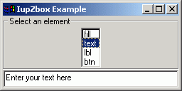

Creates a zbox container for composing elements. It is a box that piles up the elements it contains, only the active element is visible.
Ihandle* IupZbox (Ihandle *elem1, ...); [in C] Ihandle* IupZboxv (Ihandle **elems); [in C] iup.zbox{elem1, elem2, ... : ihandle} -> (elem: ihandle) [in Lua] zbox(elem1, elem2,...) [in LED]elem1, elem2, ...: List of the elements that will be placed in the box. NULL defines the end of the list in C.
Important: in C, each element must have a name defined by IupSetHandle. In Lua a name is always automatically created, but you can change it later.
This function returns the identifier of the created zbox, or NULL (nil in Lua) if an error occurs.
ALIGNMENT: Defines the alignment of the active element. Possible values:
"NORTH", "SOUTH", "WEST", "EAST",
"NE", "SE", "NW", "SW",
"ACENTER".Default: "NE".
MARGIN: Defines the margin of the visible element. Its value has the format "widthxheight", where width and height are integer values corresponding to the horizontal and vertical margins, respectively. Default: "0x0" (no margin).
VALUE: Changes the active element. The value passed must be the name of one of the elements contained in the zbox. Default: the first element. To set the name of an element, use the IupSetHandle function. In Lua you can also use the element reference directly.
SIZE: Defines the zbox size. Default: the smallest size that fits its largest element.
The box can be created with no elements and be dynamic filled using
IupAppen.Though this element can have attributes ALIGNMENT and MARGIN, it does not have attribute GAP.
